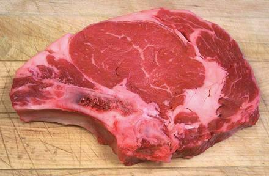
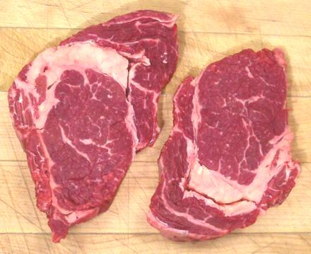

These steaks are cut from the Rib primal cut, actually Rib Roast, and may be bone-in, as in the photo, in which case they are Rib Steaks (#1103) or boneless as Ribeye Steaks (#1103A).
There is a variation cut from a boneless Ribeye Roll called Ribeye Roll Steaks (#1112) with two variations A and B. The Ribeye Roll steaks do not have a tail. These are probably pretty much fancy restaurant items.
Rib and Ribeye steaks are quite tender and considered desirable for grilling, thus are a bit pricey. The photo specimen was 8-1/2 inches long, 5-1/2 inches wide and 5/8 inch thick, weighing 10 ounces. It would have been better around 3/4 inches thick.
There is uncertainty exactly what a Delmonico steak originally was, but it was apparently a very thick ribeye steak (around 2 inches) specially prepared for individual diners. Today, there are several things called Delmonico steaks.
Cooking: These are considered excellent charcoal
grilling steaks. Of course they can also be pan fried or broiled. They
should be cooked over very high heat with care taken they are not
overdone. You don't want to wreck an expensive cut by making it dry and
flavorless.
 This second photo is to show how much variation there can be depending on where in the rib roast the steak is cut from and how much bone the meat cutter chooses to leave on. This photo specimen was 7 inches long, 5 inches wide, 7/8 inch thick and weighed 13-1/8 ounces. It was almost too tender.
More on Cuts of Beef.

This photo shows typical Ribeye steaks, which are bone-off. Naturally,
these cost more by the pound for extra labor as well as more meat.
This steak is also called a Spencer steak, and sometimes a Delmonico
steak, though what a Delmonico steak properly is is debated.